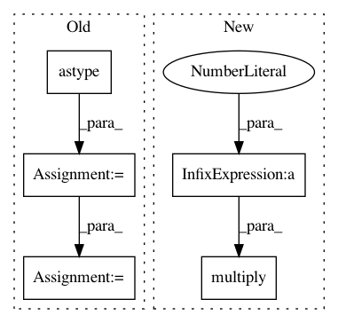

529be500d5e81487081a84da8bfc90ddbc40072d,skimage/util/dtype.py,,convert,#Any#Any#Any#Any#,63
Before Change
// floating point -> integer
prec_loss()
// use float type that can represent output integer type
image = image.astype(_dtype_itemsize(itemsize_out, dtype_in,
np.float32, np.float64))
if not uniform:
if kind_out == "u":
image *= imax_out
else:
image *= imax_out - imin_out
image -= 1.0
image /= 2.0
np.rint(image, out=image)
np.clip(image, imin_out, imax_out, out=image)
elif kind_out == "u":
After Change
np.multiply(image, imax_out,
out=image_out, dtype=computation_type)
else:
np.multiply(image, (imax_out - imin_out)/2,
out=image_out, dtype=computation_type)
image_out -= 1.0 / 2.
np.rint(image_out, out=image_out)
np.clip(image_out, imin_out, imax_out, out=image_out)
elif kind_out == "u":
In pattern: SUPERPATTERN
Frequency: 3
Non-data size: 5
Instances
Project Name: scikit-image/scikit-image
Commit Name: 529be500d5e81487081a84da8bfc90ddbc40072d
Time: 2018-05-18
Author: mark.harfouche@gmail.com
File Name: skimage/util/dtype.py
Class Name:
Method Name: convert
Project Name: scikit-image/scikit-image
Commit Name: 46b3b7562f0c14ddfeace2484767e270387b14a8
Time: 2018-05-18
Author: mark.harfouche@gmail.com
File Name: skimage/util/dtype.py
Class Name:
Method Name: convert
Project Name: open-mmlab/mmcv
Commit Name: a0506ec5605f23e4bd5a0fe63d08aedd28420e33
Time: 2020-02-15
Author: innerlee@users.noreply.github.com
File Name: mmcv/image/transforms/normalize.py
Class Name:
Method Name: imnormalize